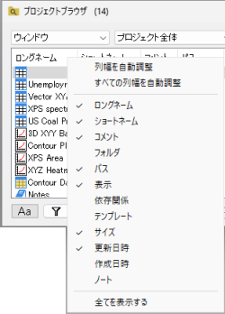
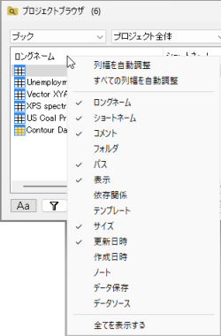
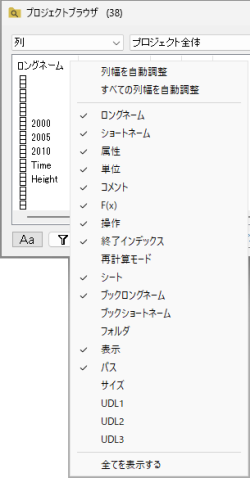
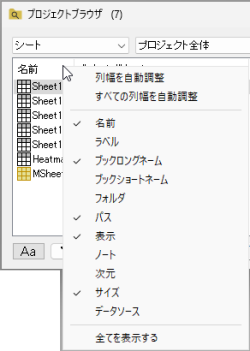
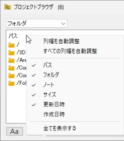
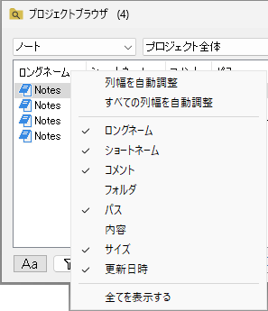

Originはワークブック、グラフ、シートをナビゲートするためのプロジェクトブラウザ機能をサポートしています。また、メタデータやデータセル、グラフオブジェクトを含むプロジェクトにある文字列や数値データを検索できます。
次のいずれかの方法を選択して、「プロジェクトブラウザ」ダイアログを開きます
プロジェクトブラウザ内の空のスペースをダブルクリックすると、ダイアログを閉じることができます。 |

ドロップダウンを使用して、プロジェクトブラウザにリストするウィンドウ/シート/列/フォルダのウィンドウ/タイプを指定します。

ドロップダウンを使用して、ウィンドウ/列/フォルダの範囲をフィルタリングします。
| プロジェクト全体 | プロジェクト全体のウィンドウ/列/フォルダを一覧表示します。 |
|---|---|
| フォルダとサブフォルダ | アクティブなフォルダとそのサブフォルダ内のウィンドウ/列/フォルダを一覧表示します。 |
| フォルダ | アクティブなフォルダ内のウィンドウ/列/フォルダのみを一覧表示します。 |
高度な検索 ボタンをクリックして、検索 ダイアログを開きます。
プロジェクトファイル内を検索ボタンをクリックすると、プロジェクトファイル内で検索ダイアログを開けます。
コンテキストメニューを表示するには、このリストの列ヘッダ領域を右クリックします。このリストはオブジェクト依存です。
選択した場合...
| ウィンドウ/グラフ | ブック | 列 |
|---|---|---|
 |
 |
 |
| シート | Folders | メモ |
 |
!  |
 |
右クリックメニュー：
|
| 表示 | 選択したウィンドウ/列を非表示にした場合に表示します。 |
|---|---|
| 非表示 | 選択したウィンドウ/列を非表示にします。 |
| 削除 | 選択したウィンドウ/シート/列/フォルダを削除します。 |
| 名前の変更 | ウィンドウ/シート列のロングネームを変更します。 |
| 名前とコメント | 名前の変更ダイアログを開きます。
|
| 名前の一括変更 | 後述の名前の一括変更セクションを参照ください。 |
| 式の変更 | 後述の式の変更セクションを参照ください。 |
| 操作の削除 | ワークシートの列の再計算をなしに設定します（緑色の鍵を除去します）すると再計算モードになしと表示されます。
このダイアログでは、複数の行（ワークシート内の複数の列）を選択して、それらの操作を一緒に除去することができます。 |
| ダブルクリックでダイアログを開いたままにする | 行をダブルクリックしてウィンドウ/シート/列/フォルダをアクティブにすると、このプロジェクトブラウザダイアログが開いたままになります。 |
| 埋め込みを非表示 | リスト内の埋め込みウィンドウを非表示にします。 |
| 結果シートの非表示 | プロジェクトブラウザでシートを表示する場合、このオプションにチェックを付けて分析結果シートを非表示にします。 |
| ソースパスを表示 | 後述のソースパスを表示セクションを参照ください。 |
| ミラー列のみ/ ミラー元のみ/ ミラー元に移動/ 列の数式に変換/ ミラーリングを削除/ ミラーに移動/ すべてのミラーを削除 |
ミラー列とそのソース列でのみ使用可能です。
後述のミラー列セクションを参照ください。 |
複数の行を選択して右クリックし、名前の一括変更を選択してダイアログを開きます。このダイアログで、複数のウィンドウ/シート/列/フォルダの名前を変更できます。

| 変更 | ウィンドウの場合は、ロングネームまたはショートネームを変更することを選択できます。
列の場合は、シート名またはシートラベルを変更するように選択できます。 |
|---|---|
| 名前全体を置換 | ウィンドウ/シート/列/フォルダの名前全体を置換します。 |
| 検索と置換 | ウィンドウ/シート/列/フォルダの名前で指定された文字列を見つけて、指定された文字列を置き換えることができます。 |
| 検索 | 検索と置換オプションがチェックされている場合、この編集ボックスがダイアログに表示されます。検索したい文字列を指定します。
Note: ワイルドカード（*?）を使用することができます。
|
| 大文字小文字の区別 | 検索で大文字と小文字を区別するかどうかを指定します。
例えばABCを検索するときにこの設定が有効な場合には、ABCは検索しますがabcは検索しません。 |
| 置換 |
Note: %(), $(), %Y, %@F などがサポートされています。 |
メタデータを使用した名前の一括変更の例：


このダイアログで列を表示するよう選択した場合、このダイアログで行を右クリックし、右クリックして式の変更を選択すると、選択した列の式を変更できます。

| 式全体を置換 | 式全体を、置換の編集ボックスに入力された新しい式で置換します。 |
|---|---|
| 検索と置換 | 式で指定された部分を検索し、置換の編集ボックスに入力した新しいスクリプトを使用して置換します。 |
| 検索 | 検索する式に指定した部分を入力します。 |
| 置換 | 式または式の中の指定された部分を置換する新しい式（スクリプト）を入力します。 |
プロジェクトブラウザにブック/シートを表示し、列ヘッダーにデータソースを表示する場合、このオプションにチェックを入れると、データソースにソースパスが表示されます。

Ctrl + Aキーを使用して、リスト内のすべての行を選択できます。このダイアログでは、Ctrl+ZとCtrl+Yホットキーによって、操作を元に戻したりやり直したりすることができます。 |
列を選択してボックスに一覧表示するとミラー列とそのソース列は、ミラー列のアイコン 、ソース列のアイコン、その両方の場合で区別されます。
、ソース列のアイコン、その両方の場合で区別されます。
| ミラー元へ移動 | ソース列が強調表示されたソースワークシートに飛びます。 |
|---|---|
| 列の数式に変換 | 選択したミラー列を列式を使用するように変換します。 |
| ミラーリングを削除 | 内容を保持しながらソースへのリンクを解除します。 |
| ミラーへ移動 | ミラー列が強調表示されたミラーワークシートに飛びます。複数のミラーが存在する場合、このメニューはツールチップにリストされている最初のミラーにジャンプします。 |
|---|---|
| すべてのミラーリングを削除 | 内容を保持しながら選択したソース列からすべてのミラーのリンクを解除します。 |
ミラー列の詳細は、このページを参照してください。 |
リスト内のウィンドウ（ブック/グラフ/ノート）/シート/列を選択し、F2キーを押すと、インプレース編集状態で入力して名前を編集できます。
ロングネームとショートネームの列が表示されている場合は、ロングネームを編集するだけです。ショートネームの列のみが表示されている場合は、ショートネームを編集できます。
ボックスに文字列または数値データを入力して、プロジェクトブラウザにリストされているウィンドウ/シート/列/フォルダを検索します。 名前だけでなく、それらのメタデータを検索できます。

| 大文字小文字の区別ボタン | 検索で大文字と小文字を区別するかどうかを指定します。 |
|---|---|
| 検索フィルタ列 | 検索する列(メタデータ)を指定します。 |
| 編集ボックスを検索 | 検索したい文字列や数値データを入力します。ワイルドカード（* および ?）がサポートされています。たとえば、末尾を「*abc」というように検索できます。 |